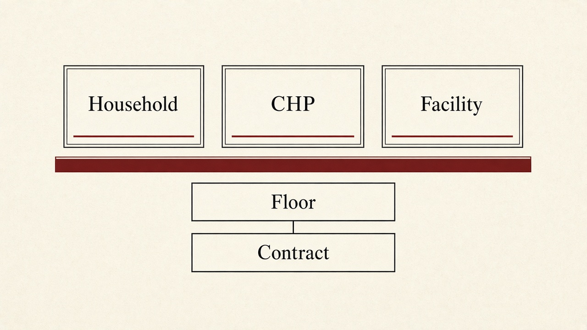
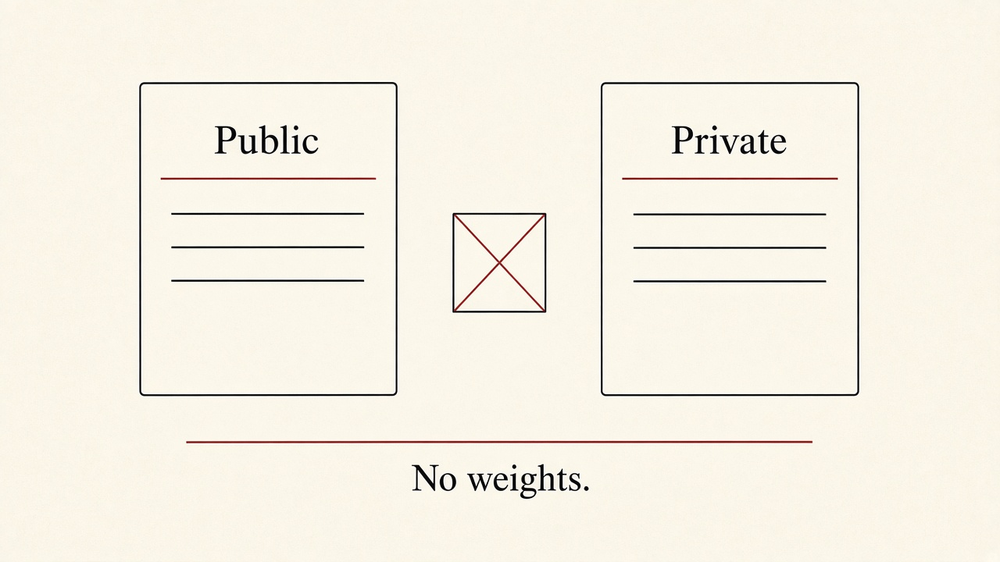
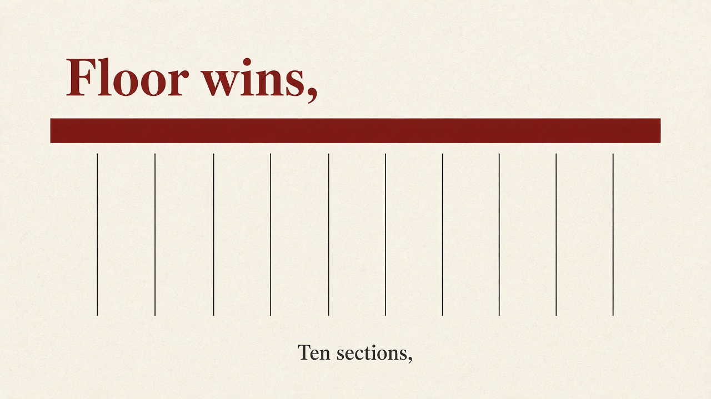
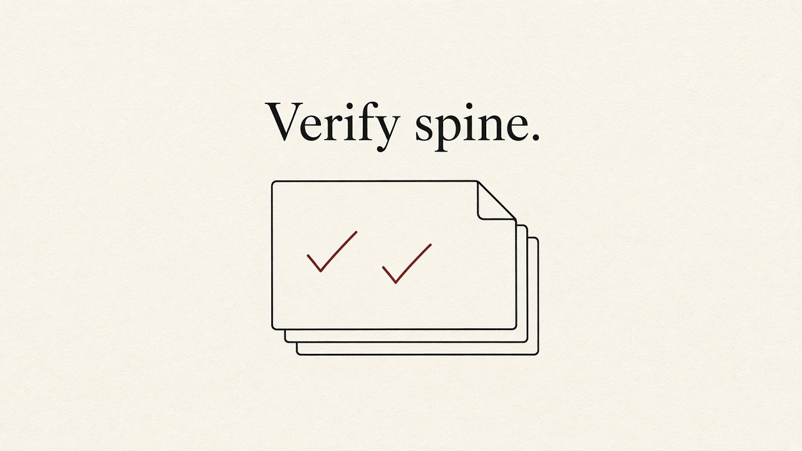
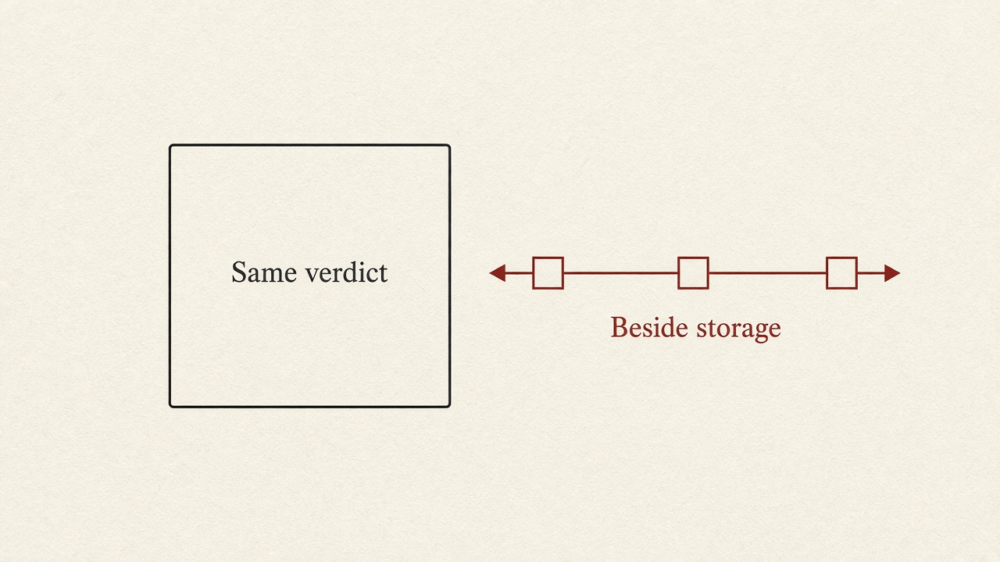
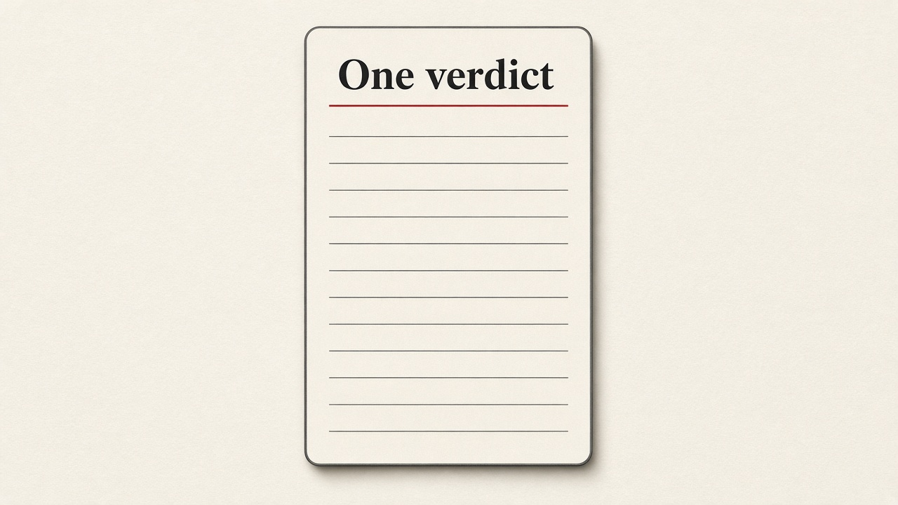
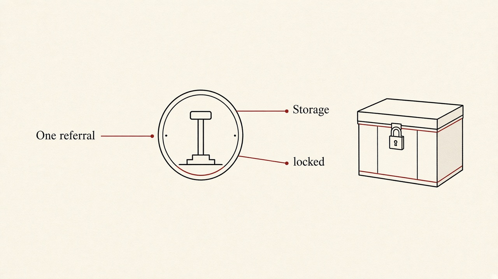
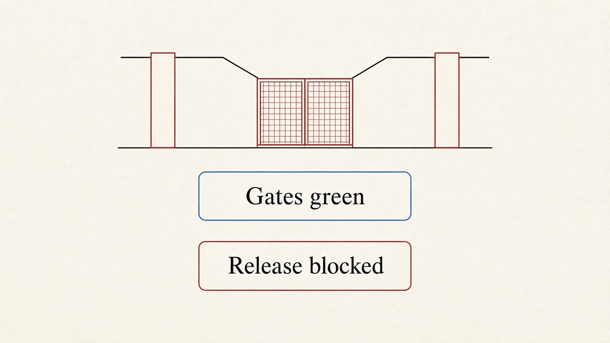
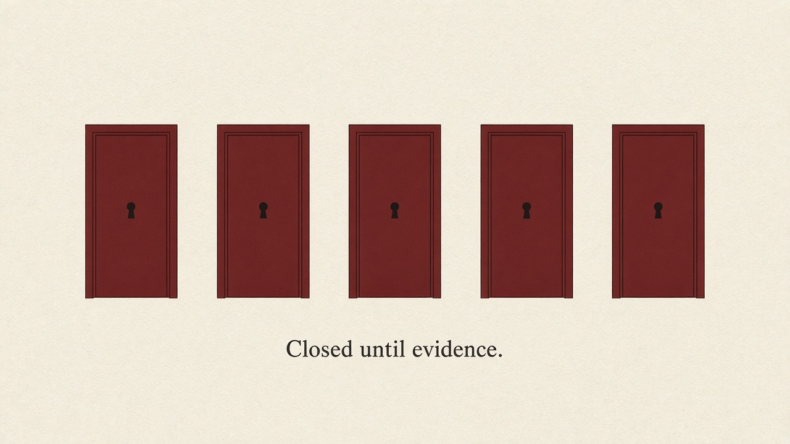

Plan: Tunza architecture as developed
One public Next.js app. A demo floor that cannot be downgraded. A ten-section contract that is not yet on the screen.

Purpose
Record the Tunza architecture that actually exists on 2026-10-07, and specify the one bounded slice that finishes it: put the clinical contract on the existing care path without opening training, retrieval, the private prompt lane, or a release.
This is an engineering plan. It is not a clinical approval, not a device claim, and not a model release. The demo rules in lib/assessment.ts stay labeled not clinically validated.
Problem
The pitch and the second-brain page still talk as if Tunza were either unbuilt or already a trained healthcare model. The code is neither. The public repo is a working three-surface demo. The private repo is a hosted prompt in front of Anthropic, with no floor under it. Wave 1 built the missing contract in the public tree, then stopped before the screen used it.
- There are no owned weights, no adapter, and no training set in either tree. The phrase "existing Tunza clone model" means the private prompt lane, not a clone. Source:
vault/capability-map.mdsection 0. - The public decision is
decide()atlib/assessment.ts:91. The store still calls it directly atlib/store.tsx:198.runClinicalPipelineis not imported by any component. - The README "What exists today" list includes vitals, case history, outbreak signals, verified clinicians, notifications, web push, and a PWA. Those are not in the public code. Code is truth. Source:
vault/capability-map.mdsection 17. - Host recovery wrote the rest of wave 1 into the working tree and did not commit or push. Head of the last child commit is
8228512. Source:vault/wave1-handoff.md. - The second-brain page
wiki/tunza.mdstill says the product is pre-build and that the architecture names are absent from~/code/Tunza. That page is stale relative to this tree. Do not treat it as the current architecture.

Solution
Keep the public app as the trunk. The demo floor remains the only approved path. A candidate that is lower, unrecognized, or merely higher-but-unapproved is rewritten to the floor and recorded as a disagreement. The ten sections stay separate. The household still sees one verdict. Nothing in this slice trains, retrieves, encodes a guideline threshold, edits medical-triage, or authorizes a release.
lib/copy.ts only. describeReferral is the only place referral state becomes words.lib/store.tsx. Verdict is still a Decision from decide(). Persistence stays localStorage key tunza.v2.care. Do not store the contract there.decide(). Four kinds: go now, get care today, monitor at home, need one more answer. English and Kiswahili danger keywords. Abstain by asking, not by inventing certainty.lib/clinical/contract.ts. Ten sections. Disposition table adds escalate and abstain internally. No new user-visible headline. abstain has a null headline key.fail_open is the literal false.not_measurable. No score field gates a release. Promotion stays blocked.
Relevant Files
Existing Files
- existing
lib/assessment.ts— demo floor. Do not edit the rules ordecide(). - existing
lib/types.ts—Role,DecisionKind,ReferralStage,Encounter. Read-only this slice. - existing
lib/copy.ts— EN/SW table. Contract section labels already exist at the English keys around line 359 and the Kiswahili keys around line 701. A missing Kiswahili string is a compile error. - existing
lib/referral.ts— canonical lifecycle and the single presentation function. - existing
lib/store.tsx— reducer. Line 198 setsdecisionfromdecide(answers)when the question flow stops. - existing
lib/clinical/contract.ts— runtime-validated ten-section assessment. Committed in2a1812d. Do not rewrite it. - existing
lib/clinical/state.ts— append-only encounter projection. Working tree, uncommitted. - existing
lib/clinical/reconcile.ts— floor wins. Working tree, uncommitted. - existing
lib/clinical/pipeline.ts—decide()then reconciler then contract. Not called by the UI. - existing
evals/runner.ts— frozen baseline runner. Expected labels are not derived fromdecide(). - existing
evals/gates.ts— fail-closed promotion.promotionis the literal"blocked". - existing
components/DecisionResult.tsx— verdict, one action, optionalchildren, optional why-list. - existing
components/surfaces/HouseholdSurface.tsx— renders the verdict fromdecision.kindat line 101. Wiring point. - existing
components/surfaces/ChpSurface.tsx— same component, clinical context allowed underneath. - existing
components/CarePath.tsx— referral words only throughdescribeReferral. - existing
tests/assessment.test.ts— locked floor cases. Must stay unchanged and green. - existing
vault/wave1-contract.md— scope, deferrals, file ownership, exit checks. - existing
vault/wave2-ledger.md— closed doors and the evidence required to open them.
New Files
- new
components/ContractSections.tsx— renders the tenRenderedSectionrows. No prose collapse. No new copy keys unless both languages are added together. - new
tests/contract-sections.test.tsx— EN and SW labels, empty evidence shown as empty, headline unchanged.
Implementation Phases
IMPORTANT: Execute every phase and task step by step, in order, top to bottom.
Status markers: [] idle · [wip] in progress · [x] complete · [f] failed. All start as []; the Build Plan workflow updates them as it works.
[] Phase 1: Re-verify the spine already in the tree
Do not rebuild wave 1. Confirm the working tree still matches the handoff, then re-run the four gates before any UI edit. If a gate fails, fix the regression in the new wiring only after this baseline is green. Do not "repair" the floor to make a later test pass.

1. Inventory the branch
[]Confirm the repo is/Users/evanmotovich/code/Tunzaand the branch isclinical-contract-wave1.[]ConfirmHEADis8228512unless a later local commit on this same branch is recorded in an amendment. Do not reset, rebase, or push.[]Confirm these uncommitted paths still exist and were not rewritten:lib/clinical/state.ts,lib/clinical/reconcile.ts,lib/clinical/pipeline.ts,evals/gates.ts,evals/adversarial/,vault/wave1-handoff.md,vault/wave2-ledger.md.[]Confirmlib/clinical/contract.tswas not edited after2a1812d. If it differs, stop and record the diff. Do not silently accept a rewrite.[]Confirmdecide(), theDecisionKindunion, andtests/assessment.test.tsare unchanged frommainat2a42af2plus the wave-1 commits. Do not edit them in this plan.
2. Re-state the invariants before touching UI
[]A fixture missing any of the tenSECTION_KEYSfailsvalidateClinicalAssessment.[]Temperatures 37.4 then 39.2 at different timestamps both remain. Encounter state has no singletemperaturefield.[]Candidate dispositionself-careagainst floorgo_nowreconciles togo_nowwith reasoncandidate_below_floor.[]A higher unapproved candidate is not applied. Reason iscandidate_not_approved. The returned disposition is still the floor.[]Demo-pathmodel_idandknowledge_versionare null. Retrieved evidence is empty withtrust_tier: "none".[]evaluateReleaseGatereturnspromotion: "blocked"andrelease_authorization: "none".
3. Testing Strategy
Use the existing toolchain only. No new dependencies. These commands prove the spine still matches the 2026-10-06 handoff before any surface change. If a command fails, fix the cause and re-run. Do not delete a failing assertion to go green.
[]npx tsc --noEmit— the contract, pipeline, and copy table still typecheck, including Kiswahili parity.[]npm test— prior assessment cases stay green, including Kiswahili danger keywords, child-not-drinking togo_now, and incomplete story toneed_one_more_answer.[]npm run lint— no new lint errors in the clinical modules.[]npm run build— Next.js still compiles the three routes and the client surfaces.
[] Phase 2: Call the pipeline at render time
The gap is not a missing module. runClinicalPipeline exists and the store ignores it. Compute the contract from the encounter the reducer already holds. Do not change what gets persisted.

4. Keep the reducer decision line
[]Leavelib/store.tsxanswer handling asconst decision = upcoming ? null : decide(answers). The persistedEncounter.decisionstays aDecision.[]Do not addClinicalAssessment,ClinicalEvent[], or disagreement records toCareState. The localStorage write would expand stored clinical detail before the privacy projections exist.[]Do not pass a model candidate from the UI. The demo path calls the pipeline withcandidateomitted, somodel_idstays null.
5. Add a pure view helper
[]Add a function, inlib/clinical/pipeline.tsor a sibling that only imports it, that accepts the currentEncounterand locale and returnsPipelineResult.[]PassgeneratedAt: encounter.updatedAt. That field is already an ISO timestamp. Do not callnew Date()inside render; the pipeline throws if the timestamp is not explicit ISO.[]Ifencounter.decisionis null, do not run the pipeline. The question flow is still open.[]After the call, assertresult.assessment.next_action.disposition === encounter.decision.kind. If it differs, render the existingdecide()verdict and do not show the contract. A mismatch is a defect, not a new headline.[]Demo path must not emitescalateorabstain.pipelineDecideralready throws on those. The view helper must do the same and fall back to the storedDecision.
6. Testing Strategy
Vitest, no browser, no network. Prove the view helper is a projection of the floor, not a second decision maker.
[]npm test -- tests/clinical-pipeline.test.ts tests/assessment.test.ts— existing floor cases and pipeline cases still pass, andtests/assessment.test.tsis unmodified.[]npm test -- tests/clinical-reconcile.test.ts—self-careagainstgo_nowstill rewrites up, and a telemetry throw does not change the disposition.
[] Phase 3: Show the ten sections without a new verdict
The household screen already has one job: say what to do next. The contract is support. It must not become a second essay, a chat transcript, or a collapsed paragraph.

7. Build ContractSections from the existing component set
[]Createcomponents/ContractSections.tsx. Props:sectionsfromrenderAssessment, plus locale. No new visual language. Paper card, line border, label type, same radius asDecisionResult.[]Render one row perSECTION_KEYSentry, in that order. Usesection.labelfromt(). Do not hard-code English.[]Rendersection.bodyas structured fields. Arrays stay lists. Empty arrays stay visible as empty, including hypotheses. Do not join the ten bodies into one string.[]Retrieved evidence rendersretrieval_statusandtrust_tieronly. Do not invent a citation.itemsis an empty tuple in this wave; the type forbids items.[]Contradictions render claim, source, importance, andresolution_status: "unresolved". Do not add a resolve button.[]Provenance rendersrules_version, nullmodel_id, nullknowledge_version, andgenerated_at. Do not label this "validated".
8. Mount it where the verdict already lives
[]InHouseholdSurface, keepheadline={decisionHeadline(decision.kind, locale)}. Do not switch the headline torendered.headlineunless a test proves they are the same string for all fourDecisionKindvalues in both locales.[]PutContractSectionsin thechildrenslot ofDecisionResult, inside adetailselement, closed by default. The open verdict, the one action, and the warning signs stay above it. Design rule: one dominant answer.[]InChpSurface, mount the same component expanded under the sameDecisionResult. CHP may see the sections without an extra click. The headline is still the household headline, not a different clinical sentence.[]Do not mount it onFacilitySurface. That surface speaks referral state throughCarePathanddescribeReferral. A second clinical paragraph there would split the truth.[]Do not add a headline forabstain. If the helper throws, the existing four headlines remain the only ones on screen.[]Reuse copy keyscontractObservedFactsthroughcontractProvenance. If a new string is required, add it to bothenandswin the same edit.swisRecord<CopyKey, string>.
9. Testing Strategy
Testing Library plus the existing contrast and copy tests. Prove language parity and that the verdict node is unchanged.
[]npm test -- tests/contract-sections.test.tsx tests/components.test.tsx tests/copy.test.ts— ten labels render in EN and SW, empty evidence is shown as empty, and existing component copy does not drift.[]npm test -- tests/contrast.test.ts— no new raw colors. Components keep using tokens. Oxblood and emergency red stay at least 1.5× luminance apart.
[] Phase 4: Leave the product boundaries where they are
Wiring the contract must not quietly complete the README. Several neighboring systems look unfinished. They are closed on purpose.

10. Do not cross these boundaries
[]Do not editdescribeReferralor invent referral copy in a surface. Internal stage names never appear on screen.[]Do not attach Google Places results toreferral.facilityId. Nearby lookup is real. Referral facilities stay the labeled demo list until capability truth exists.[]Do not change/api/facilities,/api/transcribe, or/api/access. Precise coordinates stay on device. Worker codes stay server-side. Voice still degrades server, then on-device, then type.[]Do not add vitals, image interpretation, case history, outbreak signals, web push, or a PWA in this slice. Image attachment remains a boolean the rules do not read.[]Do not edit/Users/evanmotovich/code/medical-triage. The adapter ticket atvault/tickets/medical-triage-adapter.mdstays not started.[]Do not edit anything under fusion-harness, includingadws/. Do not add a training entrypoint, a dataset writer, a weight path, a retriever, or an IMCI/ETAT threshold.[]Do not vendor guideline text. Do not put PHI, secrets, or.envcontents in fixtures, docs, or logs.
11. Testing Strategy
Diff and test boundaries. The proof is absence as much as presence.
[]git diff --stat -- lib/referral.ts lib/assessment.ts lib/types.ts app/api tests/assessment.test.ts— those paths show no edits from this slice.[]git -C /Users/evanmotovich/code/medical-triage status --short— no new edits from this work. Pre-existing dirt stays untouched.[]npm test -- tests/referral.test.ts tests/api.test.ts tests/places.test.ts— referral words, access gate, and the location-blind facility proxy still pass.
[] Phase 5: Exit fail-closed
Green engineering gates are not a release. This phase records what was wired, re-runs the full gate set, and leaves promotion blocked.

12. Write the session note, not a release note
[]Addvault/sessions/2026-10-07-architecture-wired.md. State what was verified, which files changed, and that clinical effectiveness is not established.[]Updatevault/INDEX.mdcurrent-state paragraph. Do not claim the README capabilities that section 17 of the capability map already marked missing.[]Do not editvault/wave2-ledger.mdexcept to append a dated line if a door's evidence actually appeared. None of those doors open because this plan's tests passed.[]Local commit is allowed by the wave-1 contract. Push, merge, and rebase are not. Do not commit unless the four gates in the next task are green. Do not push under any result.
13. Testing Strategy
Full local gates plus the release function. The release function must still refuse.
[]npx tsc --noEmit— view helper and new component typecheck against the existing contract.[]npm test— full vitest run, including unchanged assessment cases.[]npm run lint— clean.[]npm run build— production build still generates the static pages.[]npm test -- tests/eval-gates.test.ts— promotion remains blocked, required families that arenot_measurablestill block, and no field namedscoreoraccuracyis a ship gate.
Validation Commands
Execute these commands from /Users/evanmotovich/code/Tunza to validate the entire plan is complete:
[]npx tsc --noEmit— types, copy parity, and the pipeline timestamp check still hold.[]npm test— floor, contract, state, reconciler, gates, copy, contrast, and the new section render all pass.[]npm run lint— eslint clean.[]npm run build— Next.js 16 production build succeeds.[]git diff --stat -- lib/assessment.ts lib/types.ts tests/assessment.test.ts— the floor and its locked tests were not edited.[]git status --short -- lib/clinical components/ContractSections.tsx— the only product change is the view helper, the section component, its test, and the two surface mounts.
Notes
What "architecture so far" means
Read this as three layers that already exist, plus one layer that is specified and not built.
| Layer | Status | Where |
|---|---|---|
| Three surfaces, EN/SW, referral machine, access gate, voice degrade, location-blind Places | On main through PR #7, commit 2a42af2 | components/, lib/store.tsx, app/api/* |
| Ten-section contract | Committed on the branch, 2a1812d | lib/clinical/contract.ts |
| State, reconciler, adversarial fixtures, release gates, pipeline | Written, uncommitted, gates were green on 2026-10-06 | lib/clinical/, evals/ |
| Screen uses the contract | Not built. This plan. | HouseholdSurface, ChpSurface |
Disposition table already frozen
DISPOSITION_TABLE in lib/clinical/contract.ts is the only map. Do not add a fifth headline.
| Disposition | Action | Headline key |
|---|---|---|
| go_now | ESCALATE | goNow |
| get_care_today | ANSWER | getCareToday |
| monitor_at_home | ANSWER | monitorAtHome |
| need_one_more_answer | ASK | needOneMore |
| escalate | ESCALATE | goNow, reuse only |
| abstain | ABSTAIN | none |
Private urgency words are a different scale: self-care, see-clinic, urgent. The reconciler ranks them so they cannot downgrade the floor. Ranking is an engineering order, not a clinical severity score. Do not treat the words as synonyms in copy.
Reconcile rule, already implemented
floor = decide(answers).kind
if no candidate: return floor
if candidate rank is missing: return floor, reason candidate_unrecognized
if candidate rank < floor rank: return floor, reason candidate_below_floor
otherwise: return floor, reason candidate_not_approved
fail_open is always falseA safer-looking candidate is not applied in this wave. There is no approved clinical rule pack above the demo floor. UNAPPROVED_CLINICAL_RULES is "disabled".
Pipeline shape, already implemented
projectEncounter(encounter)
append extra events, if any
floor = decide(encounter.answers)
reconcileWithTelemetry({ floor, candidate: null })
validateClinicalAssessment(ten sections)
renderAssessment(locale) // labels via t(), collapsed: falserules_version on this path is demo-floor/unvalidated. Keep that string. Do not rename it to something that sounds reviewed.
Closed until evidence exists
- closed Retrieval ingestion. No approved source with publisher, jurisdiction, version, and effective date.
- closed Private-lane adapter. Ticket written. Route still cast-only, logs raw model text, no timeout, no floor.
- closed SFT, QLoRA, distillation, quantization. No label producer, no data-rights basis, no measured failure that training would change. A case row is not a training example.
- closed IMCI/ETAT numeric thresholds. Encoding them without a named clinician and a versioned rule pack would fake approval.
- closed JEV. External hosted decision model. Not a Tunza primitive. Not in this tree.
- closed Cross-encounter patient state. Would expand what localStorage holds before privacy projections exist.
Opening criterion for each door is in vault/wave2-ledger.md. This plan cannot supply that evidence.
Stale outside the repo
The second-brain synthesis page still says Tunza is pre-build and that JEV, TypeSafe, and an H100 campaign are not in ~/code/Tunza. The second sentence is still true: those names are not this architecture. The first sentence is not. The public app and the wave-1 contract are the architecture. A Jacob brief that described JEV and H100 as internal Tunza architecture was already filed as an overclaim. Do not revive it while wiring this slice.
Team context, not an implementation input: Ben Birnbaum owns model and eval architecture; Jacob Hirschfeld owns clinical outreach. Neither role is a substitute for the unsigned clinical review this plan refuses to invent.
Rejected approaches
- Replacing
decide()with the pipeline inside the reducer. That would persist a richer clinical object and make the floor harder to lock with the existing assessment tests. - Rendering one generated explanation. The contract exists so sections cannot collapse.
- Connecting the private Anthropic route in the same change. Its gaps are recorded. Fixing them is a different ticket, and it still would not be a release.
- Calling the result a model. There is nothing to fine-tune.

Amendments
None. Append-only after the first execution. Do not rewrite history here.